Pellikuthuru & Pellikoduku
Two beautiful traditions, one joyous beginning. Blessings, rituals and the start of our wedding celebrations with family.
Dress code
Pastels · Traditional
With the blessings of our families

Sai Priya Resorts · Visakhapatnam
In the City of Destiny, Visakhapatnam.
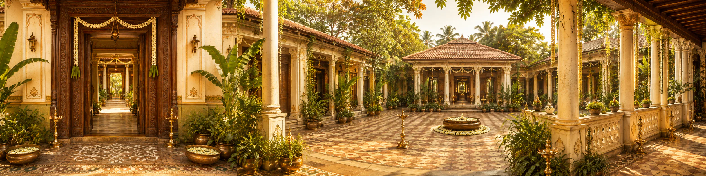
Through the doorway
An auspicious beginning awaits
Sai Priya Resorts ·
Visakhapatnam
Unveil the day we become one.
With the blessings of our families
Srirastu Subhamastu Avignamastu
“Together with our families, we joyfully invite you to join us as we begin this new chapter — with the sea at our side and every person we love on the shore. Your presence, blessings, and love will make our celebration complete.”
The two of us

One brings the punctuality, the other brings the playlists — somehow they've never missed a flight, a deadline, or a chance to dance in the kitchen. They debate everything from movie endings to who makes the better filter coffee, and agree on exactly one thing: neither of them is changing a bit, and neither would want them to.
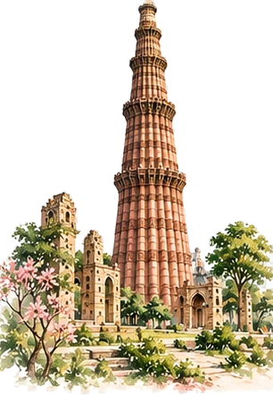
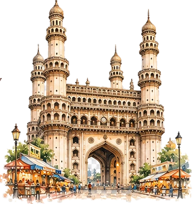
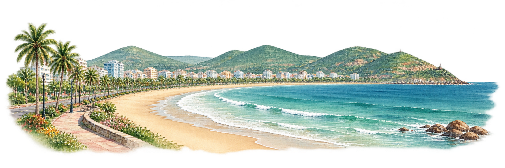
Three days · A lifetime together
Rituals, family & celebrations
Two beautiful traditions, one joyous beginning. Blessings, rituals and the start of our wedding celebrations with family.
Pastels · Traditional
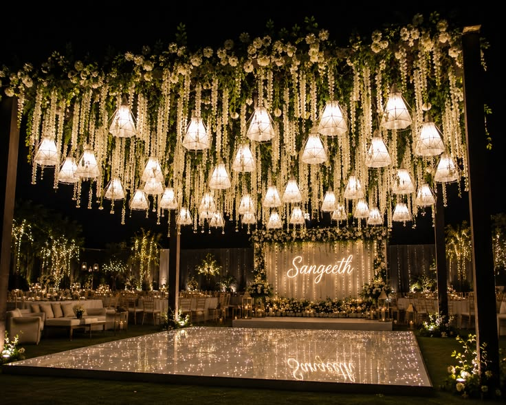
An evening by the shore with music, sea breeze and dancing.
Black, Gold & Silver Shimmer
Traditions, togetherness & celebrations
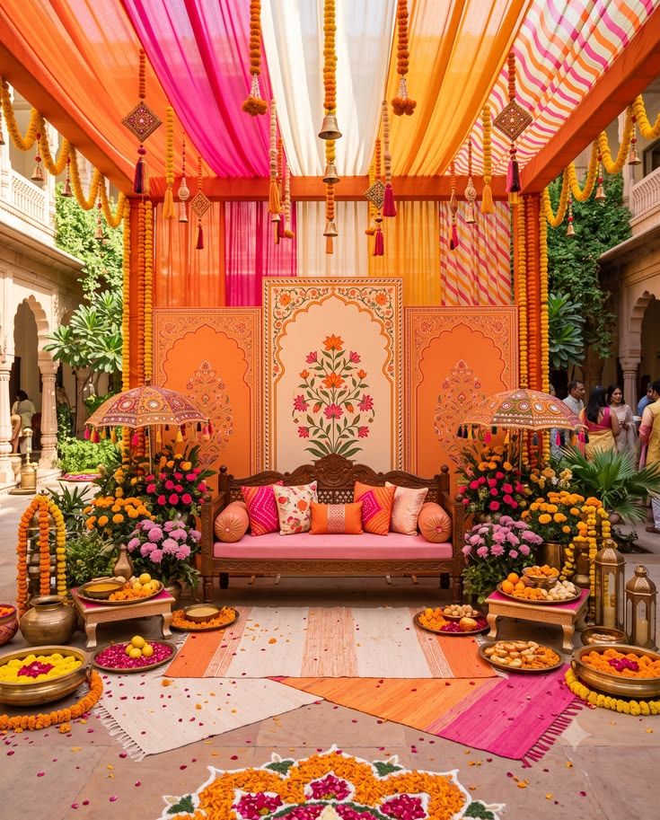
Turmeric, laughter and sunshine as we begin the day's celebrations.
Yellow · Easy to Wash
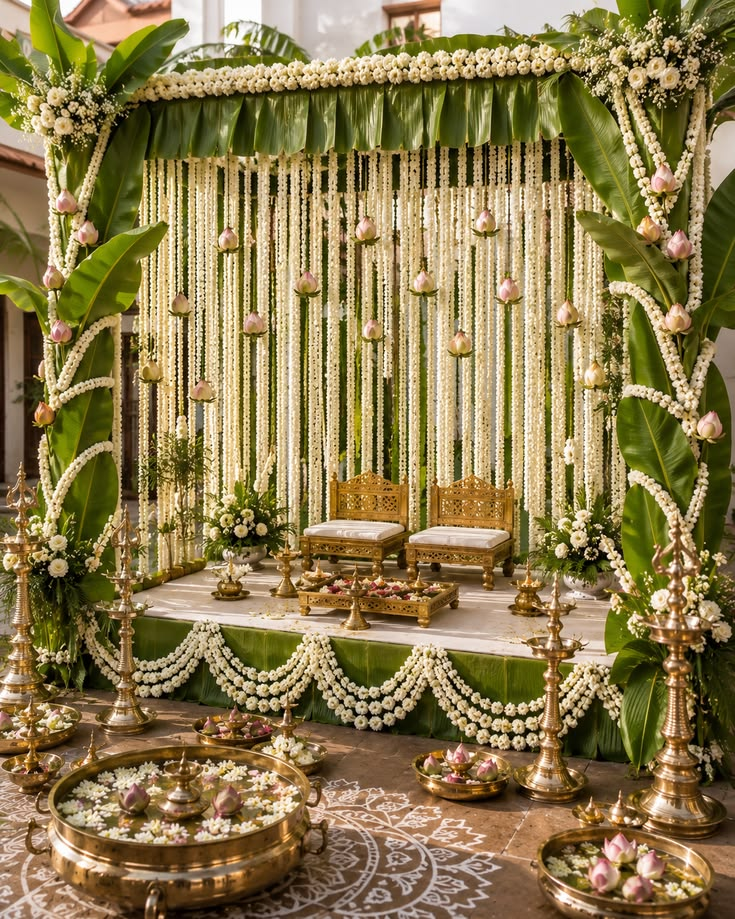
A traditional ceremony where both families formally bless and celebrate the union.
Pastels · Traditional
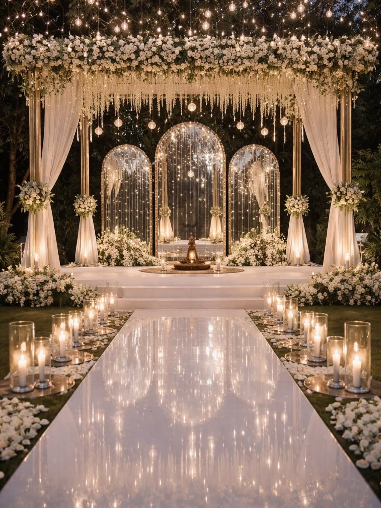
A grand welcome followed by the exchange of garlands as two families come together in celebration.
Festive · Elegant
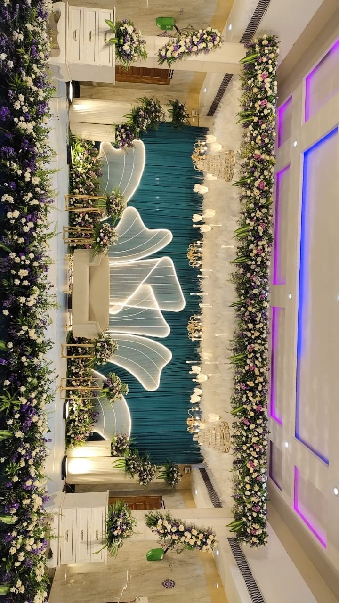
Dinner, performances and an evening of celebration under the stars.
Formal
The wedding
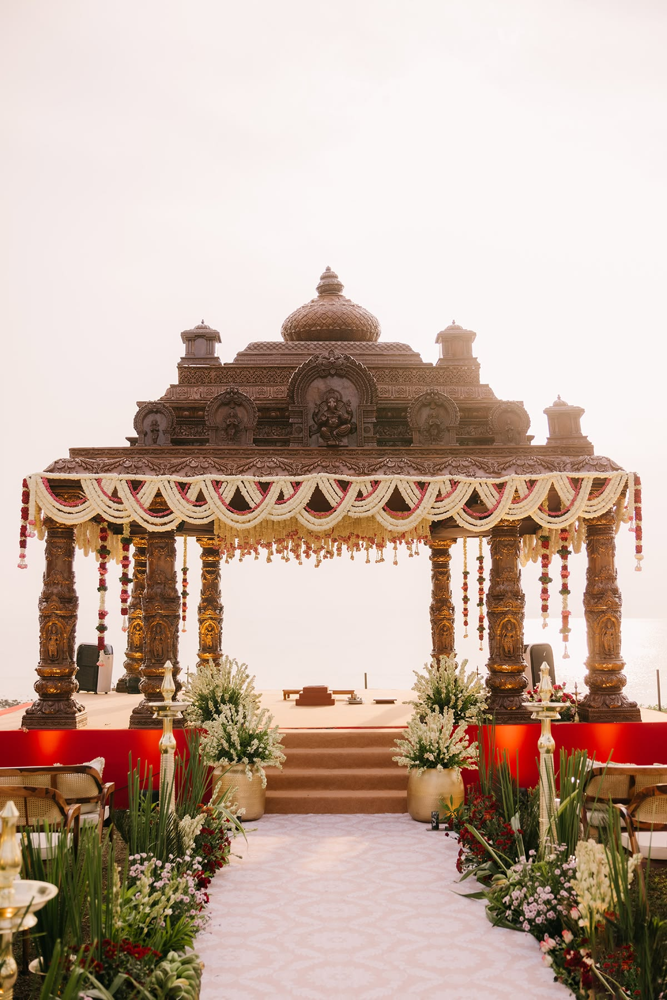
The moment we become one, with sacred rituals, blessings and a lifetime ahead together.
Traditional · Elegant
Same skies, new beginnings
Moments we carry with us
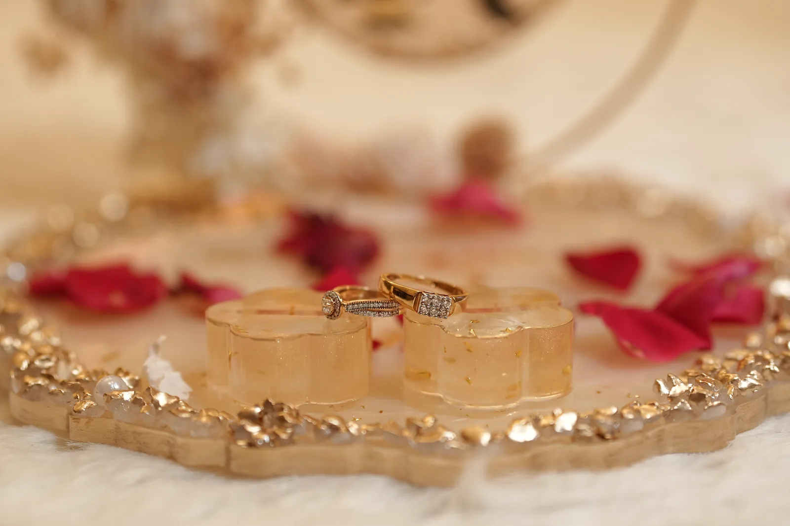
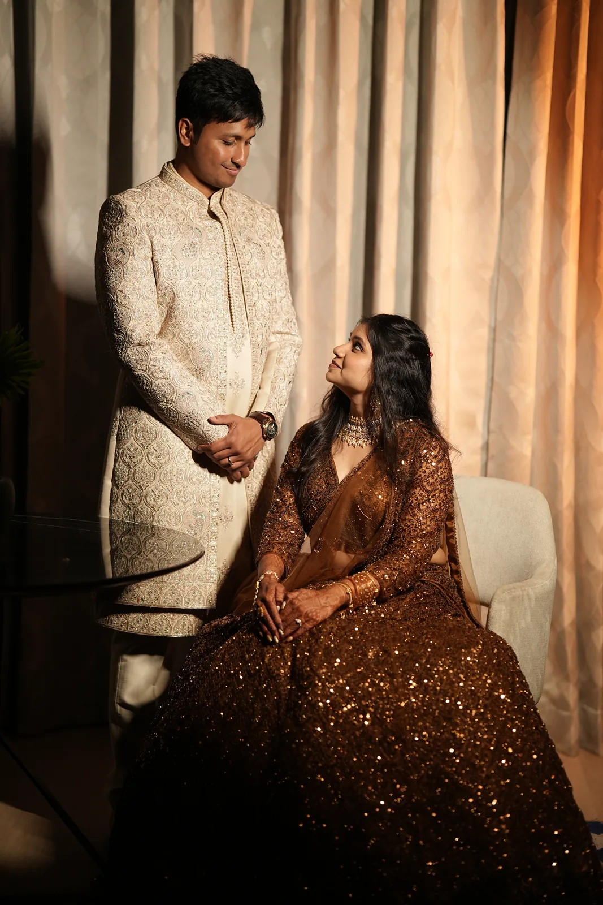
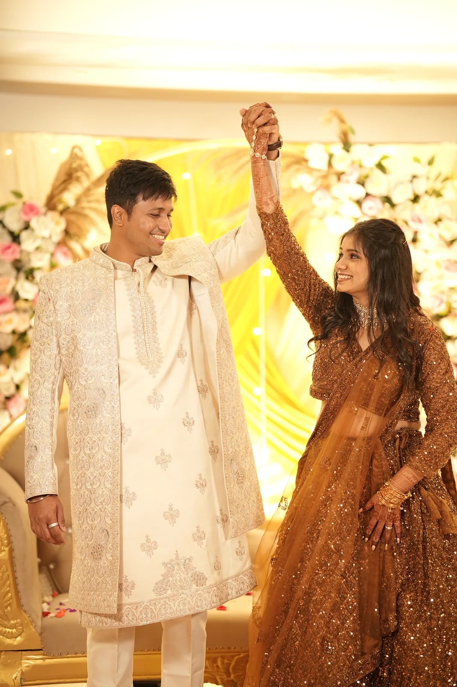
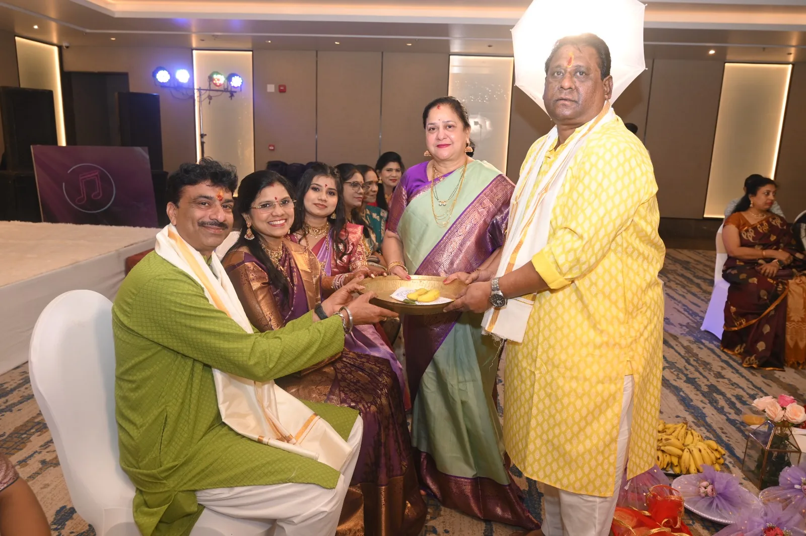
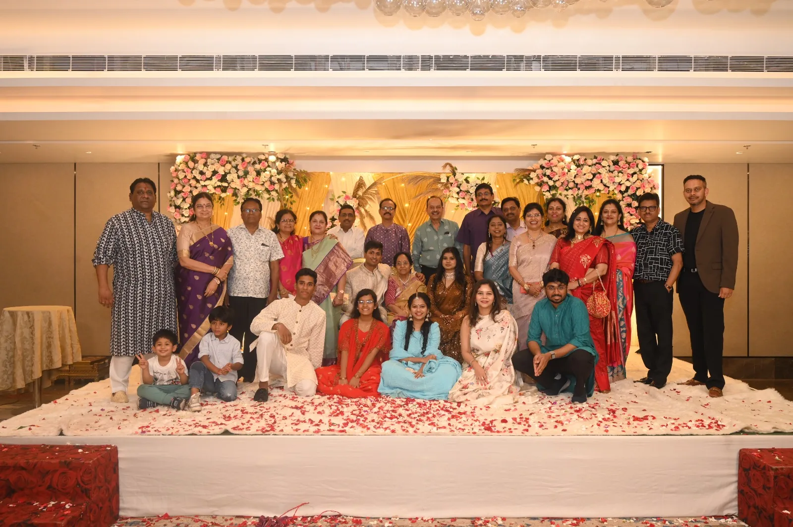
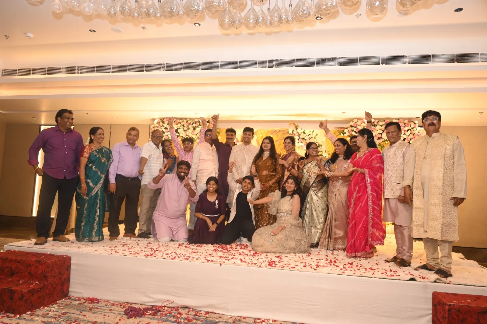
Drag, swipe, or scroll sideways through the frames.
Finding your way to us
Visakhapatnam is well connected by air and rail, and the resort sits a short drive up the coast road.
VTZ is roughly 40 minutes from the resort. Direct flights from Hyderabad, Bengaluru, Chennai, Delhi and Mumbai.
About 30 minutes away, on the Howrah–Chennai line with frequent services.
For our out-of-town guests
Make a little time to discover the coast, hills, and heritage of Visakhapatnam while you are here.
The city's iconic promenade — best at sunrise with a filter coffee in hand.
Take the ropeway up for a sweeping sunset view over the city and coast.
An ancient hilltop temple dedicated to Lord Narasimha, a short drive from the city.
A scenic train or drive through the Eastern Ghats, known for coffee plantations.
A decommissioned INS Kurusura submarine turned museum, right on the beach road.
Quieter than RK Beach, popular for its golden sand and calmer waters.
The celebrations
Share who is taking the stage, what they are performing, and the song that will get everyone dancing.
The performance lineup will be announced soon.
A place is waiting for you
Kindly confirm your attendance so the families can prepare every detail with care.
Can't join us in person?
We would love to have you celebrate with us from wherever you are.
Celebration live stream
Link goes live the morning of the wedding.
Celebration live stream
Link goes live in the evening.
Words carried home
Leave a heartfelt wish for the couple — your blessing appears here for everyone to read.
Live blessings
Bless you
Questions along the way?